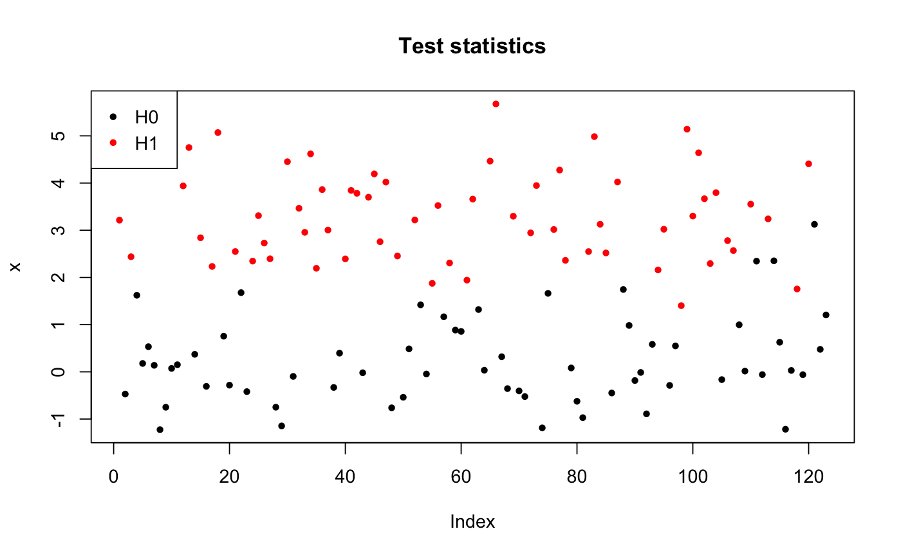
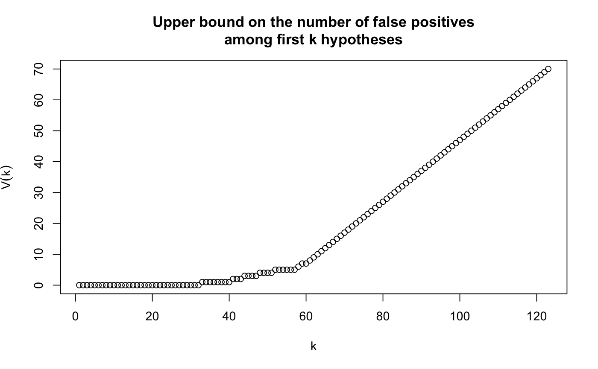

Calibration of a family of thresholds that provide joint FWER control
jointFWERControl(mat, refFamily = c("Simes", "kFWER"), alpha, stat = NULL, maxStepsDown = 100, kMax = nrow(mat), Rcpp = TRUE, verbose = TRUE)
| mat | A \(m\) x \(B\) matrix of Monte-Carlo samples of test statistics under the null hypothesis.
|
|---|---|
| refFamily | A character value which can be
|
| alpha | Target joint FWER level. |
| stat | A vector of \(m\) test statistics. Not used for single step control, and mandatory for step-down JFWER control. If not provided, single step control is performed. |
| maxStepsDown | Maximum number of steps down to be performed.
|
| kMax | For simultaneous control of (\(k\)-FWER for all \(k \le k[max]\)). |
| Rcpp | If |
| verbose | A boolean value: should extra info be printed? |
A list with elements:
A numeric vector of length m, such that the
estimated probability that there exists an index \(k\) between 1
and m such that the k-th maximum of the test statistics of is
greater than \(thr[k]\), is less than \(\alpha\).
A numeric vector of length m, the values of the pivotal
statistic whose quantile of order \(alpha\) is \(lambda\).
JFWER threshold.
An upper bound on the number of false discoveries,
as calculated by upperBoundFP(stat, thr).
a list with elements named 'thr', 'pivStat' and 'lambda' giving the sequence of corresponding vectors/values along the steps down.
set.seed(0xBEEF) m <- 123 rho <- 0.2 n <- 100 pi0 <- 0.5 B <- 1e3 sim <- simulateEqui(m, rho, B, pi0, SNR=3) X0 <- sim$X0 x <- sim$x ## Test statistics pch <- 20 plot(x, col=1+sim$H, main="Test statistics", pch=pch)legend("topleft", c("H0", "H1"), pch=pch, col=1:2)alpha <- 0.1 res <- jointFWERControl(X0, refFamily="kFWER", alpha=alpha, stat=x)#> [1] "Joint Family-Wise Error Rate control: Step down procedure based on kFWER family"Vbar <- res$Vbar ttl <- paste("Upper bound on the number of false positives", "among first k hypotheses", sep="\n") plot(Vbar, main=ttl, xlab="k", ylab=expression(bar(V(k))))